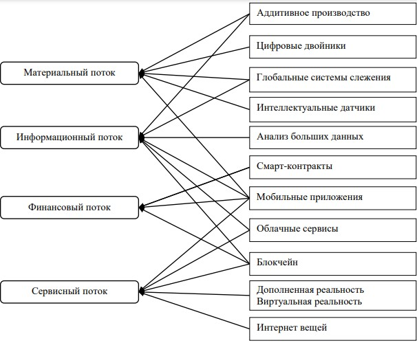

Сайт освещает использование геоинформационных технологий и технологий спутниковой навигации в транспортной логистике и управлении цепями поставок на примерах различных программных продуктов. Внедрение спутниковых и геоинформационных технологий в логистику и в сферу организации поставок и товародвижения — это следствие увеличения значимости информационных технологий в транспортной логистике. Спутниковая навигация и геоинформационные технологии в логистике применяются для анализа, планирования и принятия коммерческих решений в управлении цепями поставок.
Благодаря развитию информационных систем и технологий, обеспечившему возможность автоматизации типовых операций в транспортных процессах, логистика стала доминирующей формой организации товародвижения на технологически высококонкурентном рынке транспортных услуг. Интеграция спутниковой навигации в транспортную логистику позволяет ускорять, упрощать и удешевлять процесс товародвижения практически на всех его стадиях.
Основная проблема, с которой сегодня сталкивается система управления транспортными, грузовыми, складскими и аналогичными потоками, заключается в значительном увеличении количества людей, участвующих в сборе, обработке и передаче данных, то есть занимающихся информационными технологиями. Новые задачи, связанные с внедрением логистических принципов в сфере перевозок, требуют создания информационной инфраструктуры, позволяющей организовывать, собирать и передавать информацию всем участникам логистической сети, для функционирования такой системы применяются геоинформационные технологии в логистике, которые можно также назвать технологиями цифровой картографии.
Процесс внедрения информационно-компьютерных технологий логистики сегодня необходим и, более того, неизбежен. Это обусловлено все возрастающим объемом подлежащих обработке данных. Применение современных геоинформационных технологий в логистике позволяет повысить эффективность доставки грузов за счет возможности быстрого доступа к информации о субъектах и объектах доставки.
Цепь поставок — это сложная экономическая система, продвигающая товарно-материальное и нематериальные ценности от начального поставщика до конечного потребителя, независимо от их территориально-географического расположения с учетом правил международного торгового оборота. В настоящие время акценты в организации и управлении цепями поставок смещены в сторону трансформации традиционных цепей в пространство цифровой экономики. В терминах логистики все цифровые технологии, которые совершенствуют процесс товародвижения в цепях поставок можно представить в разрезе управления соответствующими потоками: материальными, информационными, финансовыми, сервисными. Среди наиболее востребованных цифровых технологий, которые нашли свое применение в цепях поставок, можно выделить следующие:
На приведённой схеме технологии спутниковой навигации в транспортной логистике отражены пунктом “Глобальные системы слежения”, а геоинформационные технологии в логистике — пунктом “Цифровые двойники” (которыми являются, например, электронные карты). Как видно по схеме, освещаемые сайтом технологии применяются в управлении материальным и информационным потоками.
Источники:
1) Ван Сюин, Применение цифровых технологий в международных цепях поставок, — Вестник Ростовского государственного экономического университета (РИНХ), 2020
2) Шушкович А.Г., Долгова Т.Г., Информационные технологии в транспортной логистике. Gps-мониторинг — Актуальные проблемы авиации и космонавтики, 2011